This report analyzes the latest direct frozen-output-disturbance Lyapunov MPC
ten-scenario run with longer setpoint segments:
Data/debug_exports/direct_lyapunov_mpc_ten_scenario/20260424_105932
The comparison summary was created at 2026-04-24T11:48:29. The notebook used:
| Quantity | Value |
|---|---|
| Cases | 10 |
| Logged steps per case | 6000 |
| Setpoint segment length | 1500 |
| Number of setpoint segments | 4 |
| Plant mode | nominal |
| Disturbance after step | False |
The previous reference run used 400-step setpoint segments:
Data/debug_exports/direct_lyapunov_mpc_ten_scenario/20260423_234338
The question was:
If the setpoint is held long enough, does the controller eventually settle?
The answer is:
The best current setting, bounded_soft_u_prev_1p0, does eventually settle
inside all four 1500-step setpoint segments by a practical tolerance test, but
some low-setpoint segments settle very late. More time helps this case. More
time does not rescue every tuning. The strongest previous-input regularization
(lambda_prev = 10.0) exposes a slow failure mode over long windows; it looked
competitive in the 400-step run but becomes one of the worst choices in the
6000-step run.
Longer constant setpoints separate two different questions:
For bounded_soft_u_prev_1p0, the answer to the first question is yes. It
eventually satisfies the practical settling band in all four setpoint segments.
For the second question, the answer is more cautious: it is still the best
regularized soft case overall, but it is no longer perfectly clean. In the
long run it has:
0.605, worse than the earlier 0.371;The longer run therefore supports the idea that the controller can settle, but
it also shows that the current two-stage target selector is still not a final
architecture. It is a useful diagnostic and baseline, not yet the stability
guarantee we want for the eventual RL safety layer.
A constant scheduled setpoint is not enough to guarantee settling. Standard MPC
stability results require the closed-loop optimization to remain feasible, the
terminal ingredients to be compatible with the target, and the reference or
artificial steady state to be admissible. In this controller, the scheduled
setpoint is constant inside a segment, but the internal target can still move:
If d_hat keeps moving or the bounded target projection changes active set,
the Lyapunov center moves even though y_sp is fixed. In that situation, the
usual intuition "give it enough time and it must settle" is not a theorem. It
only becomes credible when the target selector, observer estimate, and
Lyapunov-constrained MPC become mutually consistent.
For a fixed admissible artificial target (x_s,u_s), first-step Lyapunov
contraction gives:
If the same target is used and the inequality remains feasible, this implies:
so the state approaches a small neighborhood of that target. But if the target
changes with time, the Lyapunov function itself changes:
Then a decreasing value around yesterday's target does not prove convergence
around today's target. That is why target motion and active-set jumps matter.
The literature points to the same condition. Limon et al. show that constrained
tracking MPC should optimize an artificial steady state and input, and should
move to the closest admissible steady state when the requested target is not
admissible. Mayne et al. emphasize recursive feasibility and terminal
ingredients in constrained MPC. Muske and Badgwell explain why offset-free MPC
depends on the disturbance model and target calculation. Mhaskar et al. discuss
hard and soft Lyapunov predictive control under constraints. Reference
governor literature frames the same issue as modifying references only when
needed to preserve constraints.
The 400-step-segment and 1500-step-segment runs are split into performance and
reliability tables so the comparison remains readable in Markdown.
| Case | Reward 400 | Reward 1500 | RMSE 400 | RMSE 1500 |
|---|---|---|---|---|
unbounded_hard |
-36.833 | -36.833 | 1.208 | 1.208 |
bounded_hard |
-26.442 | -19.394 | 1.146 | 0.831 |
unbounded_soft |
-98.829 | -96.810 | 0.543 | 0.540 |
bounded_soft |
-33.560 | -22.288 | 1.358 | 0.963 |
bounded_hard_u_prev |
-11.640 | -11.214 | 0.644 | 0.669 |
bounded_soft_u_prev |
-15.989 | -17.552 | 0.821 | 0.844 |
bounded_hard_u_prev_1p0 |
-7.694 | -10.075 | 0.567 | 0.637 |
bounded_soft_u_prev_1p0 |
-3.598 | -9.648 | 0.371 | 0.605 |
bounded_hard_u_prev_10p0 |
-6.568 | -92.414 | 0.487 | 3.516 |
bounded_soft_u_prev_10p0 |
-4.183 | -120.213 | 0.405 | 3.303 |
| Case | Solver 400 | Solver 1500 | Slack 400 | Slack 1500 | Held/fail 1500 |
|---|---|---|---|---|---|
unbounded_hard |
0.00% | 0.00% | 0 | 0 | 6000 |
bounded_hard |
96.75% | 95.83% | 0 | 0 | 249 |
unbounded_soft |
97.31% | 97.42% | 1131 | 4171 | 155 |
bounded_soft |
97.38% | 94.80% | 16 | 40 | 312 |
bounded_hard_u_prev |
99.50% | 98.68% | 0 | 0 | 78 |
bounded_soft_u_prev |
100.00% | 99.93% | 5 | 26 | 4 |
bounded_hard_u_prev_1p0 |
99.81% | 98.87% | 0 | 0 | 67 |
bounded_soft_u_prev_1p0 |
100.00% | 99.50% | 0 | 22 | 30 |
bounded_hard_u_prev_10p0 |
99.31% | 91.70% | 0 | 0 | 497 |
bounded_soft_u_prev_10p0 |
100.00% | 85.60% | 0 | 28 | 864 |
The major change is the ranking of lambda_prev = 10.0. In the short run it
looked competitive. In the long run it is not. The strong anchor suppresses
local target movement, but over long operation it can resist necessary target
adaptation and create large target residuals, infeasibilities, and poor
tracking.
The long-run comparison plots support the same conclusion.
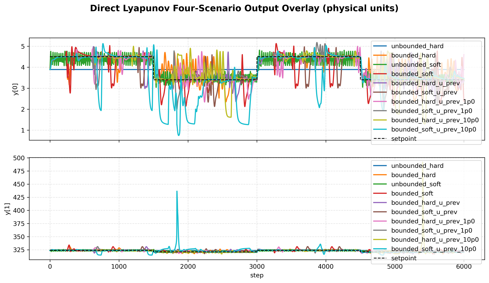
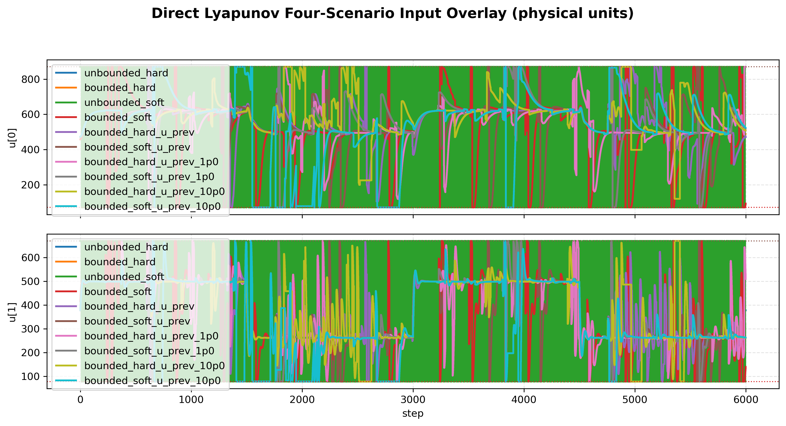
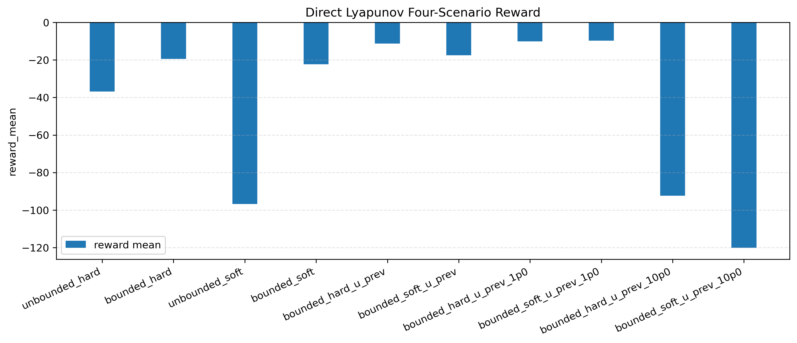
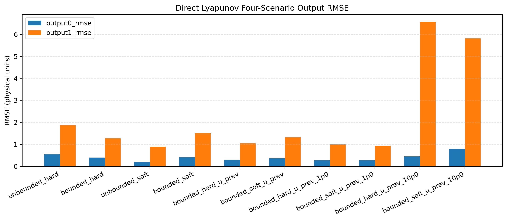
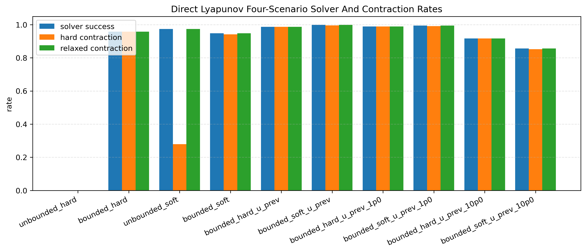
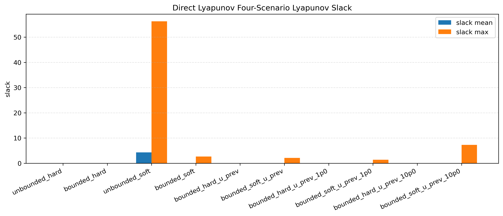
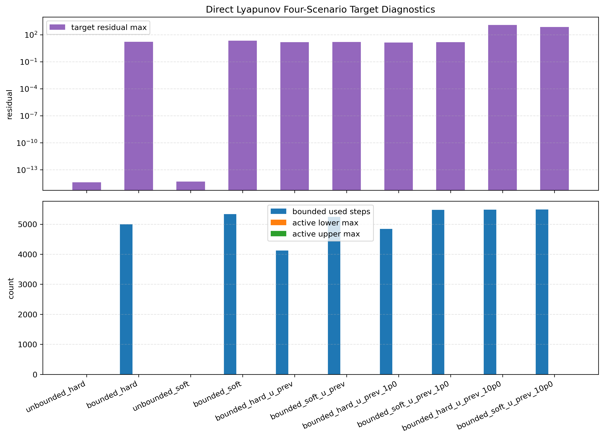
For each 1500-step segment, I computed metrics over the last 300 samples. The
tables separate output tracking from solver and target diagnostics. Here
mean du_s means the mean ||u_s-u_prev||_inf over the window.
bounded_soft_u_prev_1p0 is the best current practical case. It is no longer
perfect over 6000 steps, but it is the cleanest long-run soft setting.
| Segment | eta RMSE | T RMSE | eta bias | T bias | eta range | T range |
|---|---|---|---|---|---|---|
| 1 high | 0.0155 | 0.0767 | -0.0046 | 0.0439 | 0.0599 | 0.2396 |
| 2 low | 0.1449 | 0.5360 | 0.1000 | -0.3690 | 0.4244 | 1.6186 |
| 3 high | 0.0159 | 0.0830 | -0.0015 | 0.0293 | 0.0615 | 0.3152 |
| 4 low | 0.0811 | 0.3381 | 0.0553 | -0.2116 | 0.1977 | 1.0050 |
| Segment | Solver fails | Slack active | Residual mean | Mean du_s | Qc range | Qm range |
|---|---|---|---|---|---|---|
| 1 high | 0 | 0 | 0.1099 | 0.6720 | 25.78 | 20.81 |
| 2 low | 0 | 0 | 0.7291 | 0.2133 | 228.99 | 100.75 |
| 3 high | 0 | 0 | 0.1179 | 0.5825 | 33.78 | 20.11 |
| 4 low | 0 | 0 | 0.3980 | 2.0636 | 142.82 | 26.63 |
The high setpoint settles well. The low setpoint settles more slowly and with
larger residual thermal motion. That is visible in the full-run outputs and
inputs.
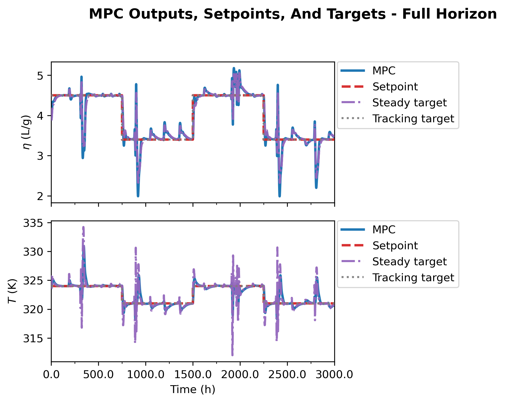
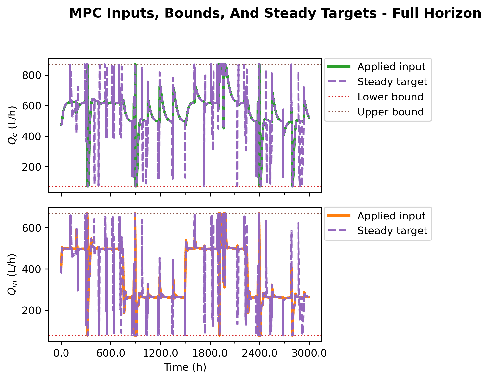
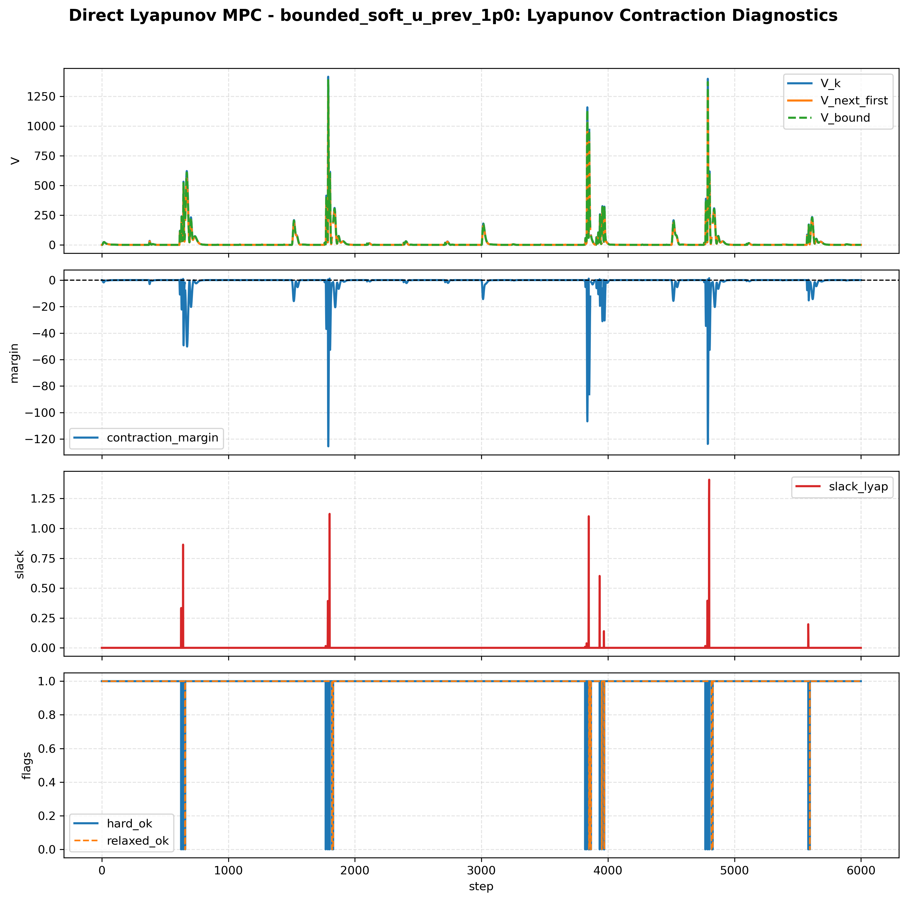
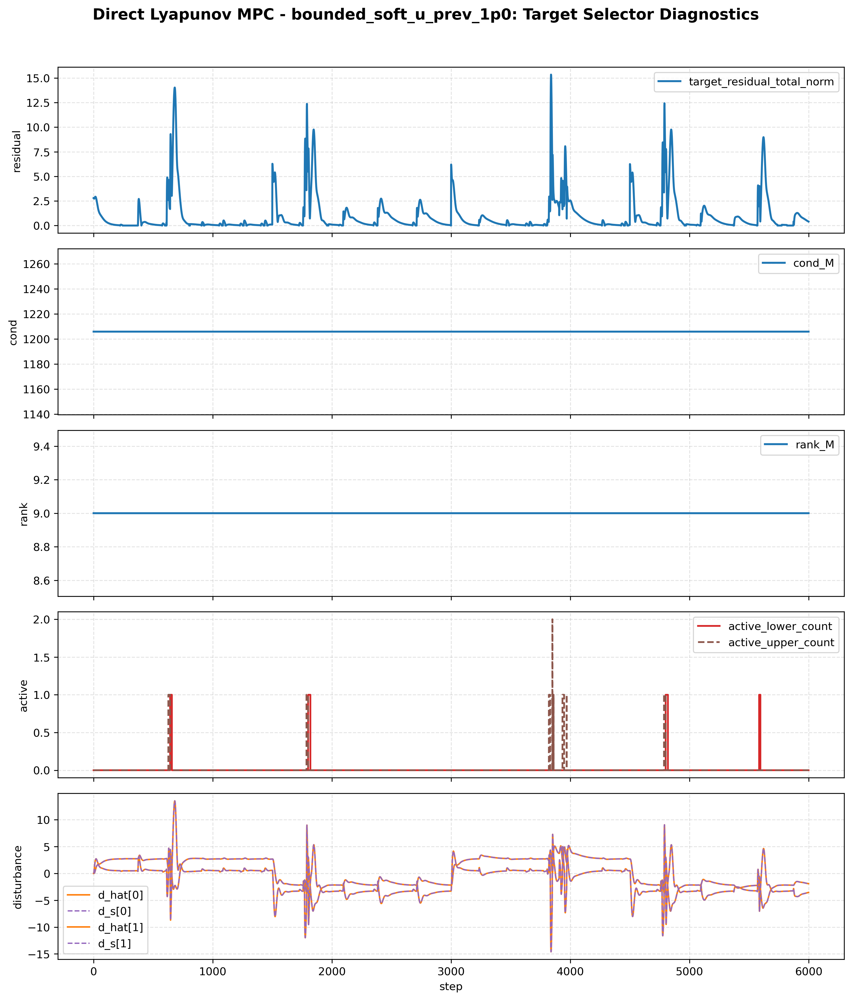
The lambda_prev = 10.0 cases are the important negative result. They do not
validate the "more time always fixes it" hypothesis. They expose a slow
failure mode.
Tracking:
| Case | Segment | eta RMSE | T RMSE | eta range | T range |
|---|---|---|---|---|---|
bounded_hard_u_prev_10p0 |
1 high | 0.1040 | 0.4710 | 0.6787 | 2.0745 |
bounded_hard_u_prev_10p0 |
2 low | 0.1141 | 0.4205 | 0.3100 | 1.1723 |
bounded_hard_u_prev_10p0 |
3 high | 0.1034 | 0.4564 | 0.7231 | 2.6978 |
bounded_hard_u_prev_10p0 |
4 low | 0.1491 | 0.5547 | 0.4349 | 1.6515 |
bounded_soft_u_prev_10p0 |
1 high | 0.9984 | 4.1491 | 3.0208 | 9.5649 |
bounded_soft_u_prev_10p0 |
2 low | 1.6320 | 4.6804 | 2.2625 | 7.1778 |
bounded_soft_u_prev_10p0 |
3 high | 0.0156 | 0.0795 | 0.0610 | 0.2890 |
bounded_soft_u_prev_10p0 |
4 low | 0.1431 | 0.5248 | 0.4205 | 1.6060 |
Solver and target diagnostics:
| Case | Segment | Solver fails | Slack active | Residual mean | Mean du_s |
|---|---|---|---|---|---|
bounded_hard_u_prev_10p0 |
1 high | 5 | 0 | 0.5184 | 0.2101 |
bounded_hard_u_prev_10p0 |
2 low | 0 | 0 | 0.5390 | 0.1826 |
bounded_hard_u_prev_10p0 |
3 high | 2 | 0 | 0.5649 | 0.6054 |
bounded_hard_u_prev_10p0 |
4 low | 0 | 0 | 0.7545 | 0.2065 |
bounded_soft_u_prev_10p0 |
1 high | 72 | 2 | 4.1461 | 0.5715 |
bounded_soft_u_prev_10p0 |
2 low | 175 | 0 | 8.0608 | 0.0079 |
bounded_soft_u_prev_10p0 |
3 high | 0 | 0 | 0.1129 | 0.5879 |
bounded_soft_u_prev_10p0 |
4 low | 0 | 0 | 0.7090 | 0.2041 |
Input range:
| Case | Segment | Qc range | Qm range |
|---|---|---|---|
bounded_hard_u_prev_10p0 |
1 high | 205.06 | 285.10 |
bounded_hard_u_prev_10p0 |
2 low | 190.64 | 64.35 |
bounded_hard_u_prev_10p0 |
3 high | 108.62 | 324.94 |
bounded_hard_u_prev_10p0 |
4 low | 238.02 | 102.44 |
bounded_soft_u_prev_10p0 |
1 high | 289.43 | 592.00 |
bounded_soft_u_prev_10p0 |
2 low | 492.30 | 224.51 |
bounded_soft_u_prev_10p0 |
3 high | 31.40 | 19.69 |
bounded_soft_u_prev_10p0 |
4 low | 225.98 | 100.08 |
The soft 10.0 case is especially revealing. It eventually looks good in the
third segment, but it has severe early long-run failure clusters. Its maximum
target residual is 739.49, with 864 held/failed steps over the run.
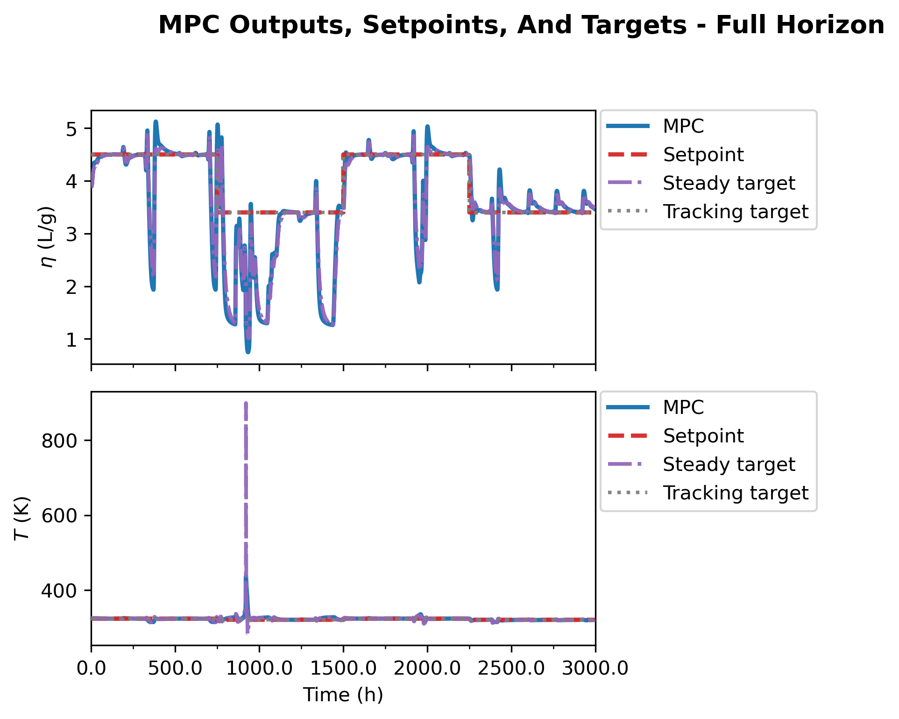
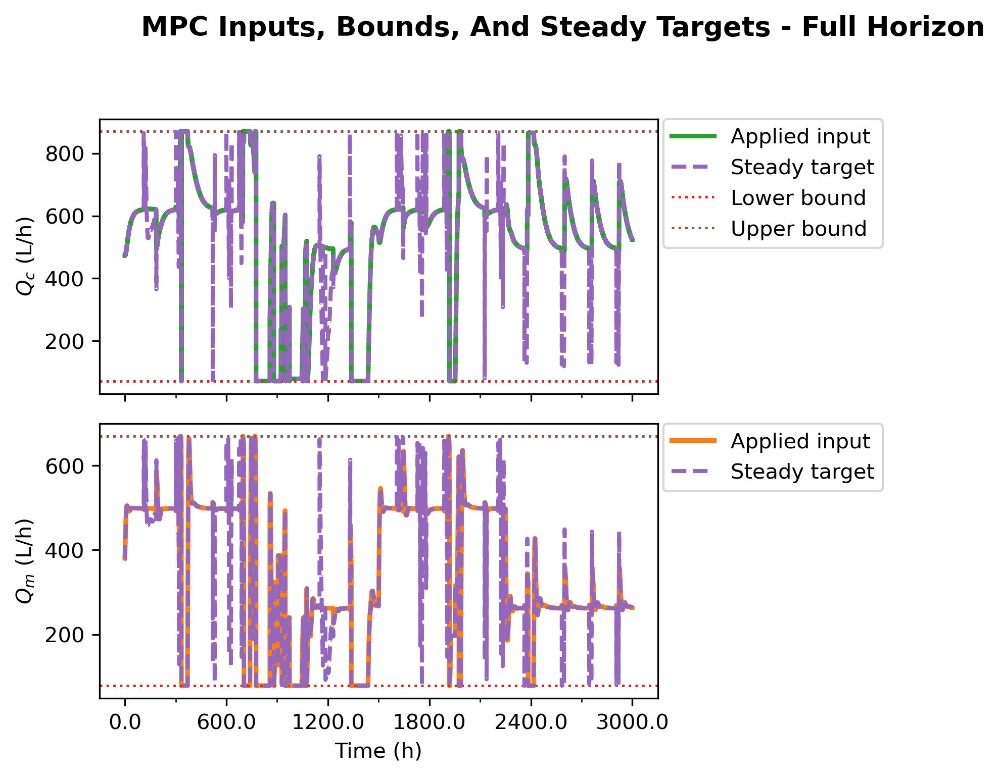
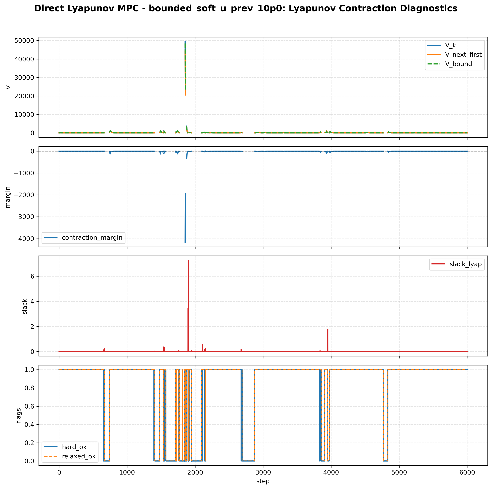
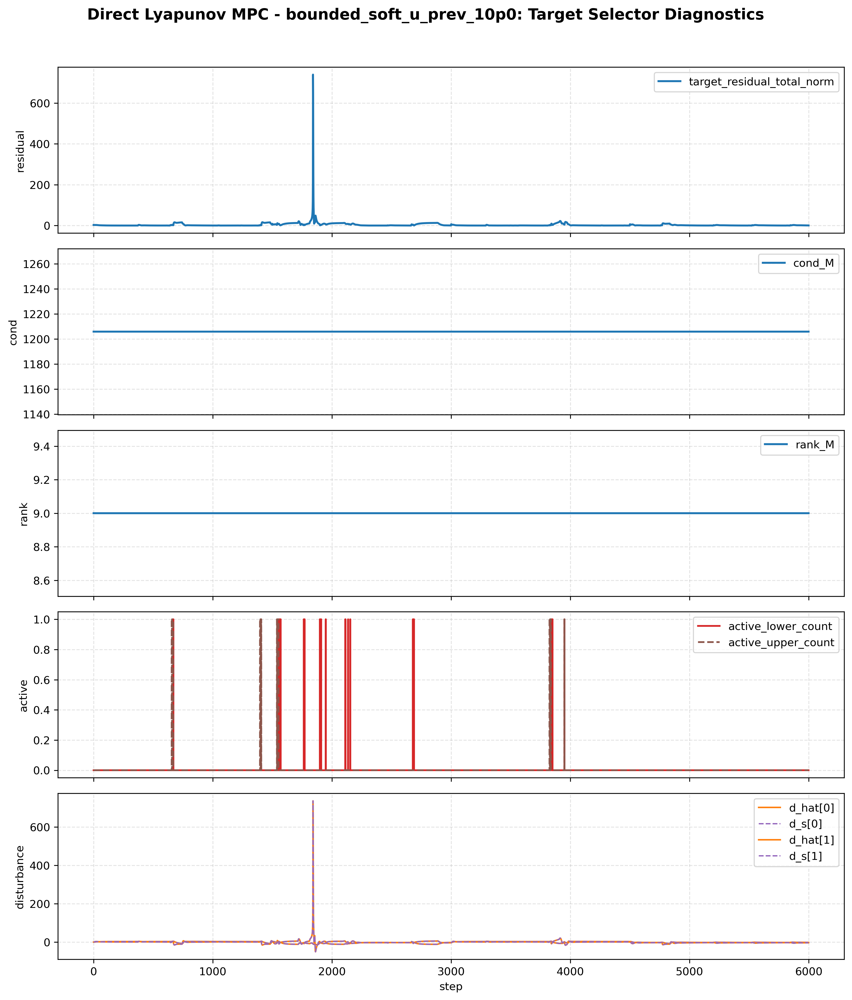
The hard 10.0 case is less visually bad than soft 10.0, but the long run
still demotes it: 498 held/failed steps and a maximum target residual
1232.66.
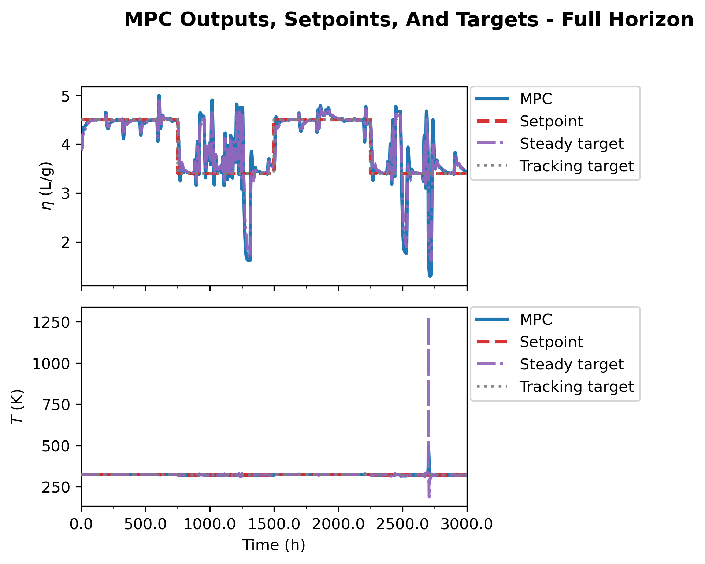
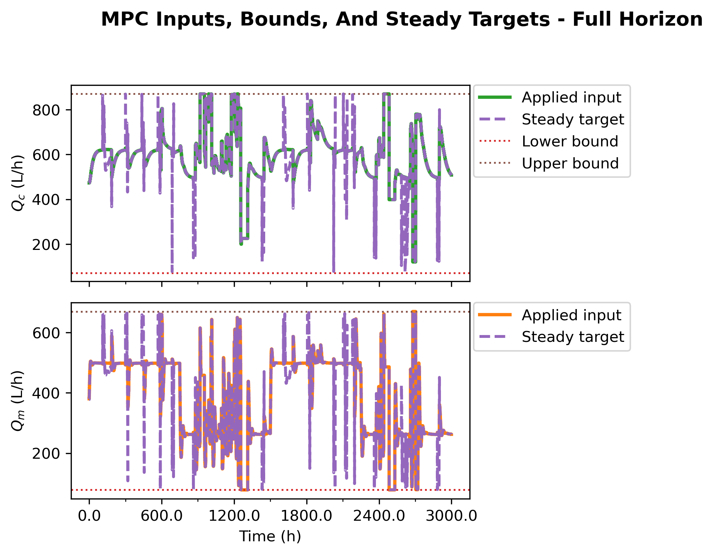
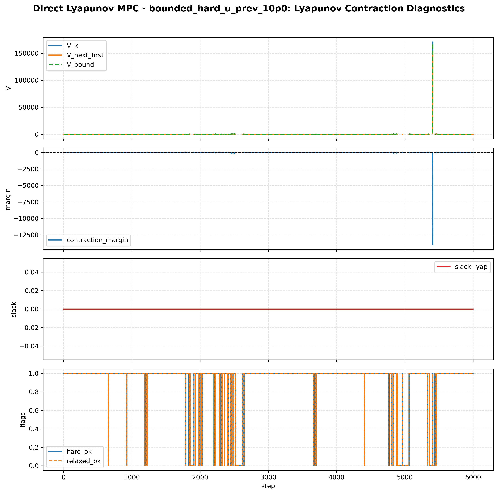
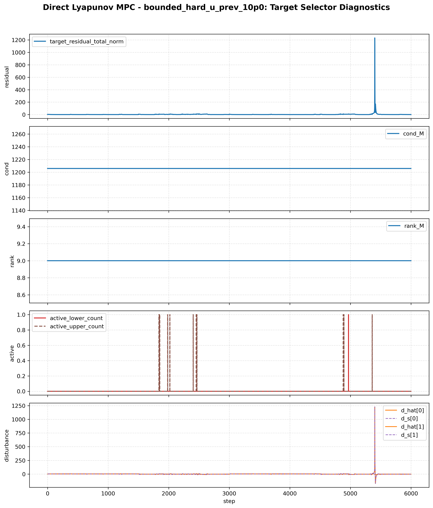
Longer setpoint segments improve the averages for the unregularized bounded
cases, but they do not make them final candidates. They still have many held
steps and larger target motion.
Tracking:
| Case | Segment | eta RMSE | T RMSE | eta range | T range |
|---|---|---|---|---|---|
bounded_hard |
1 high | 0.0009 | 0.0049 | 0.0057 | 0.0164 |
bounded_hard |
2 low | 0.0055 | 0.0223 | 0.0159 | 0.0552 |
bounded_hard |
3 high | 0.0602 | 0.3410 | 0.3280 | 1.5856 |
bounded_hard |
4 low | 0.4543 | 1.2934 | 1.5182 | 5.8882 |
bounded_soft |
1 high | 0.0704 | 0.4197 | 0.3633 | 1.3511 |
bounded_soft |
2 low | 0.4791 | 1.5710 | 2.4750 | 4.7494 |
bounded_soft |
3 high | 0.0339 | 0.1726 | 0.1423 | 0.5774 |
bounded_soft |
4 low | 0.3180 | 1.0603 | 2.0801 | 6.1447 |
Solver and target diagnostics:
| Case | Segment | Solver fails | Slack active | Residual mean | Mean du_s |
|---|---|---|---|---|---|
bounded_hard |
1 high | 0 | 0 | 0.0000 | 0.9260 |
bounded_hard |
2 low | 0 | 0 | 0.0000 | 3.0364 |
bounded_hard |
3 high | 22 | 0 | 0.2702 | 10.8520 |
bounded_hard |
4 low | 6 | 0 | 2.6933 | 11.5396 |
bounded_soft |
1 high | 3 | 0 | 0.3460 | 7.4713 |
bounded_soft |
2 low | 5 | 3 | 1.8626 | 9.8587 |
bounded_soft |
3 high | 64 | 0 | 0.1232 | 10.1106 |
bounded_soft |
4 low | 15 | 2 | 1.7902 | 11.1521 |
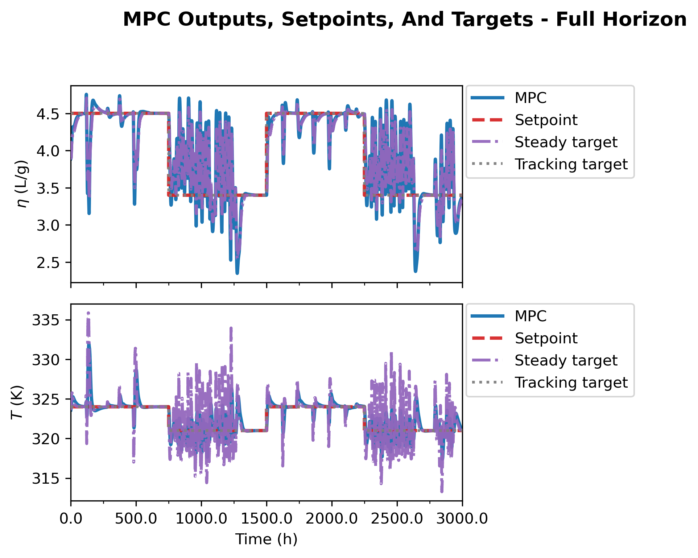
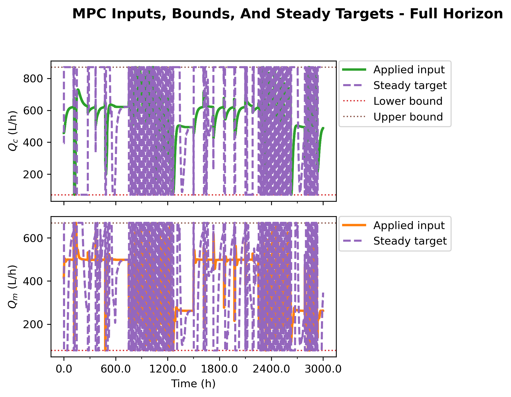
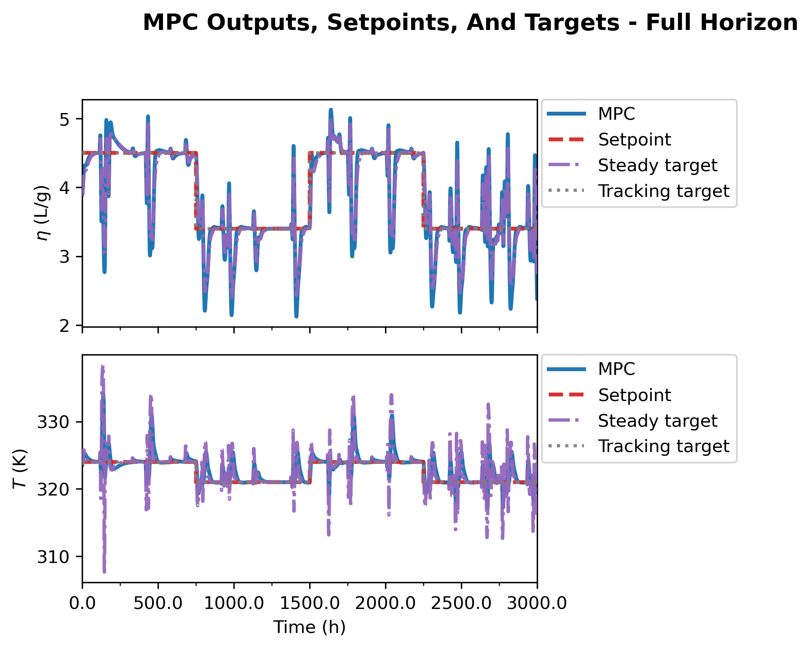
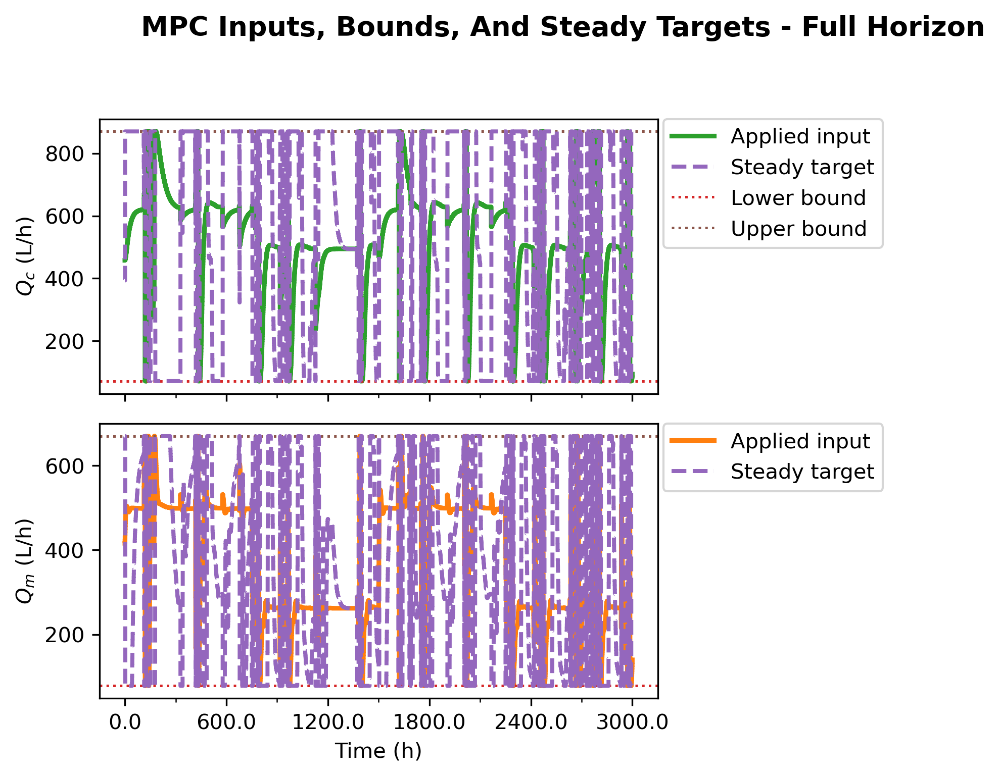
I used the following diagnostic settling band:
and asked whether the output stayed inside that band for the rest of the
1500-step segment. This is not a formal proof; it is a practical check for the
"give it enough time" hypothesis.
Values are the first global step at which the remainder of the segment stays
inside the settling band. no means the segment never met that condition.
| Case | S1 high | S2 low | S3 high | S4 low |
|---|---|---|---|---|
bounded_hard |
1057 | 2631 | 4247 | 5971 |
bounded_soft |
1419 | 2902 | 4152 | no |
bounded_hard_u_prev_1p0 |
1450 | 2963 | no | no |
bounded_soft_u_prev_1p0 |
754 | 2833 | 4103 | 5959 |
bounded_hard_u_prev_10p0 |
1253 | no | 4449 | 5927 |
bounded_soft_u_prev_10p0 |
no | 2970 | 4088 | 5966 |
This table supports a nuanced conclusion:
bounded_soft_u_prev_1p0; it eventually settles in everyThe latest run has three important extreme-event observations:
| Case | Max residual step | Max residual | Held/fail steps | Slack active | Max slack |
|---|---|---|---|---|---|
bounded_soft_u_prev_1p0 |
3838 | 15.341 | 30 | 22 | 1.407 |
bounded_hard_u_prev_10p0 |
5402 | 1232.656 | 498 | 0 | 0.000 |
bounded_soft_u_prev_10p0 |
1841 | 739.489 | 864 | 28 | 7.264 |
First failure clusters:
bounded_soft_u_prev_1p0: 657-658, 1819-1827, 3850-3851,3861-3865bounded_hard_u_prev_10p0: 653-655, 924-926, 1192, 1208-1210bounded_soft_u_prev_10p0: 670-740, 1408-1479, 1540, 1570-1713These events explain why the 10.0 cases are demoted. Their target anchoring
can keep ||u_s-u_prev|| small while allowing the output residual or state
target error to become enormous. Smooth target motion is not the same as a
good target.
Your hypothesis was right in an important way: when the target selector is not
too aggressive and not too anchored, longer setpoint holds allow the plant and
observer-target loop to settle. The best evidence is bounded_soft_u_prev_1p0.
Its high-setpoint tail windows are very quiet, and both low-setpoint segments
eventually enter the practical settling band.
But the hypothesis is not universally true. A constrained nonlinear MPC loop
does not have to settle merely because the scheduled setpoint is held constant.
The internal target must also become steady, the artificial target must remain
admissible, the Lyapunov constraint must stay feasible, and the observer
disturbance estimate must stop driving the target selector through active-set
changes.
This is exactly why the next architecture should move toward an
artificial-target tracking MPC or RL safety certificate in which the target and
the safety action are optimized together. The long run shows that target
regularization is essential, but it also shows that fixed weights in an
external target selector are fragile.
Use the long-run result to update the tuning conclusion:
bounded_soft_u_prev_1p0 as the current best nominal long-runlambda_prev = 10.0 as a primary candidate. It is useful only as anlambda_prev_grid = [0.5, 1.0, 1.5, 2.0]
Only if that certificate fails should the shield solve a correction with
u_{0|k} free.